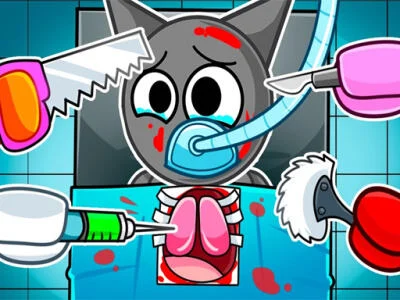

Sprunki Gets Surgery
Become a Master Surgeon in this Medical Adventure!
About The Game
Sprunki Gets Surgery is an engaging medical simulation game that puts you in the role of a surgeon performing various procedures on Sprunki. Master different surgical tools, learn about medical procedures, and ensure successful operations. With realistic mechanics and educational value, this game offers both entertainment and learning opportunities.
Surgical Tools
Master a variety of medical instruments
Multiple Procedures
Perform different types of surgeries
Learning Experience
Learn about medical procedures
Key Features:
- Realistic surgical tools
- Various medical procedures
- Interactive tutorials
- Progress tracking
- Educational content
- Achievement system
- Multiple difficulty levels
- Emergency scenarios
More Hot Games You Might Like
Game Features
Operating Room
Realistic medical environment
Medical Tools
Wide range of surgical instruments
Medical Knowledge
Learn about procedures and anatomy
Skill Progress
Track your surgical expertise
Frequently Asked Questions
How do I use the surgical tools?
▼
Each tool has specific controls and uses. The tutorial mode will guide you through proper tool usage, and you can practice in training scenarios before real operations.
Are the procedures realistic?
▼
While simplified for gameplay, the procedures are based on real medical concepts and provide educational value about basic surgical techniques and anatomy.
How do I improve my surgical skills?
▼
Practice in the training mode, complete tutorials, and gradually take on more challenging procedures. The game tracks your progress and provides feedback to help you improve.